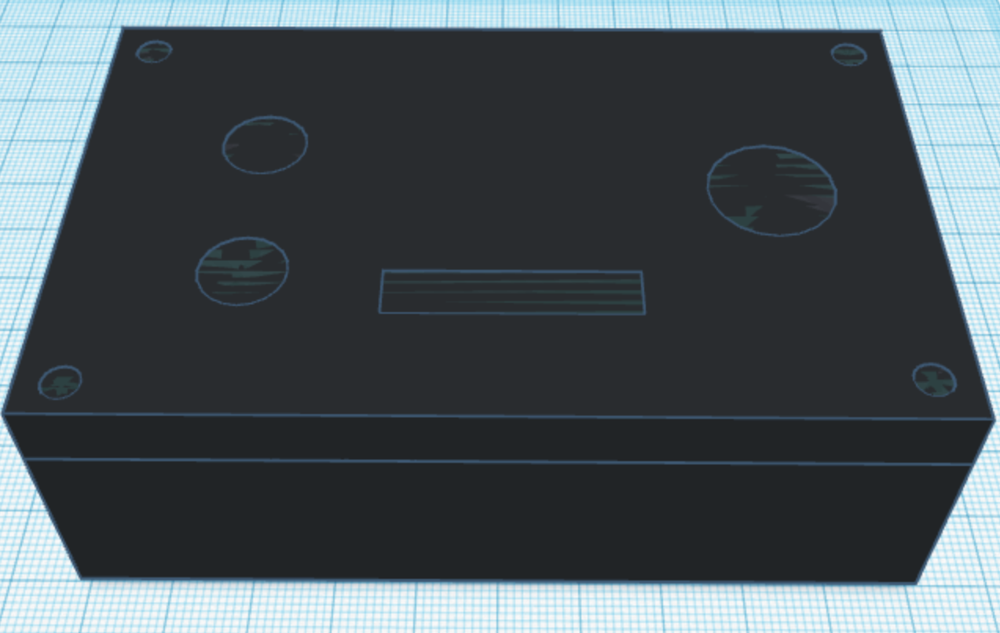
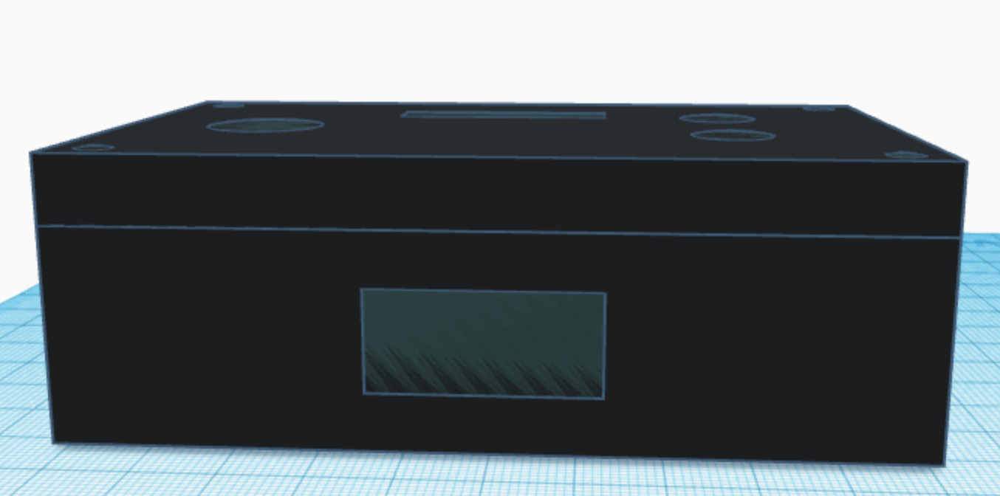
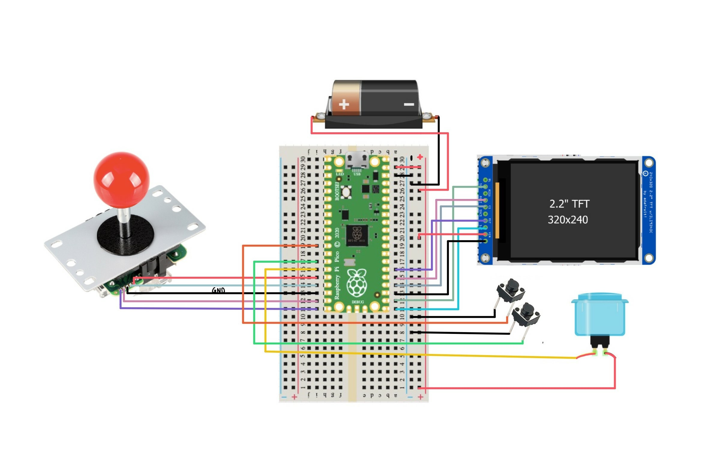

Hardware Design
Hardware Details
Our resulting hardware consists of two big parts: a box with buttons and a LCD screen, and a joystick that can be placed on a table. To give the joystick more stability, we used a few LEGO blocks to build two legs on each side of the joystick. We were originally planning to CAD the hardware frame and 3D print it, but we changed our mind and decided to use a plastic box that can fit our breadboard inside. We used a drill and a dremel to make different sized holes; there are four holes on the top of the box, where we put in the buttons and the LCD screen, and there is a rectangular hole on the back side for the joystick wires to come out. Below are the pictures of the box after drilling holes, reproduced with a 3D design tool. Our initial plan was to make everything fit in one box, but we realized that our joystick was bigger than we had expected, so we changed our hardware design so that the joystick is not part of the box anymore. We also have a battery pack attached on the back side of the box so we do not have to plug the Raspberry Pi Pico board into a laptop to power the console.
 
The most important hardware component in our project was the Raspberry Pi Pico (RP2040) board, a microcontroller that ran our code and displayed the games on the LCD screen. We chose to use a Pico for our project because it is the board that we have been using throughout the semester in this course, it can perform all the functionalities that we needed for our project, and it is small and cheap compared to other microcontrollers. Other hardware components that we used include the buttons, joystick, LCD screen, and the batteries. Below is the schematic diagram of how we wired the components together. For convenience, we used black for the ground, red for the power, and other colors for the GPIO pins on Pico.

Two out of the three buttons we used were small black push buttons; they were connected to the ground and GPIO pins to make them pull-down buttons. They were placed on the left-hand side of the LCD screen, and we programmed them to be “continue the game” and “return to the main menu” buttons. The big blue arcade button was placed on the right-hand side of the LCD screen, and was used as an “OK” button. This button had four pins, where two of them were to be connected to the power and a GPIO pin to make it a pull-up button, and the remaining two were connected to the power and ground to light up the LED inside the button.
The LCD model that we used was adafruit’s TFT ILI9340C. It is a 2.2” screen that has 240x320 resolution and ten different pins: BL (backlight), SCK (SPI clock), MISO (master-in, slave-out), MOSI (master-out, slave-in), CS (chip select), SDCS (SD card chip select), RST (reset), D/C (data/command), VIN (power), GND (ground). Since we did not use a micro SD card for our project, we did not end up using the MISO and SDCS pins; we also did not use the BL pin because the backlight did not make any difference to the brightness of the screen and therefore was not necessary for our project. The rest of the pins, except for VIN and GND, can be connected to any of the unused GPIO pins on Pico. Here is a list of how we wired them:
- SCK → GPIO 17
- MOSI → GPIO 19
- CS → GPIO 18
- RST → GPIO 20
- D/C → GPIO 16
- VIN → power
- GND → ground
Our joystick could be configured to move in eight different directions, but for our project, we only needed the standard four ways: up, down, left and right. How we set up the 8-way joystick to be a 4-way joystick is explained in the Software Design page. The joystick has five wires with different colors, through which it can be connected to a microcontroller. We connected them in the following way:
- Red → LEFT (GPIO 12)
- Orange → RIGHT (GPIO 13)
- Yellow → UP (GPIO 14)
- Green → DOWN (GPIO 15)
- Black → ground
Lastly, we used a battery holder with three AA battery cells to power our console. It can damage the Pico if the voltage goes over 5.5V, so we kept the voltage at around 4.5-5.0V by using three 1.5V AA sized batteries.
Reference to Any Design from Someone Else
The hardware setup was our original design, as we chose each component individually rather than buying a pre-built frame. For the pin configurations of the hardware components, we looked at the datasheets and manufacturer’s official webpages, which are documented in the Appendices page.
Things We Tried Which Did Not Work
A hardware-side problem that did not go as we planned in the beginning was that we did not have any sound effects in our game. This was not really under our control, however, as the speakers that we ordered never arrived or accidently got taken by someone else in the class. If we had the speakers, we were going to use the PWM to generate sequences of beep sounds with different frequencies. We hope to try this out in the future, to increase the quality of our game console.